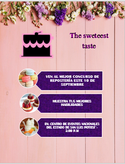

Menu Desplegable
Inicio
Descripción
Módulo I
Módulo II
Módulo III
Módulo IV
Módulo IV
Software de diseño
Proposito del Bloque
Diseña páginas web, animaciones multimedia, imágenes digitales e impresas, para generar productos de comunicación y publicidad en el ámbito laboral y comunitario, favoreciendo el desarrollo ético, creativo e intercultural del entorno.
Submódulo I
Páginas web
Contenido:
Introducción al diseño web
HTML y CSS
Diseño de página web usando software de diseño
Publicación de sitio web
Submódulo II
Diseño digital
Contenido:
Introducción al diseño digital
Software para edición de gráficos vectoriales
Software para edición de mapas de bits
Animaciones multimedia
Software de diseño editorial
